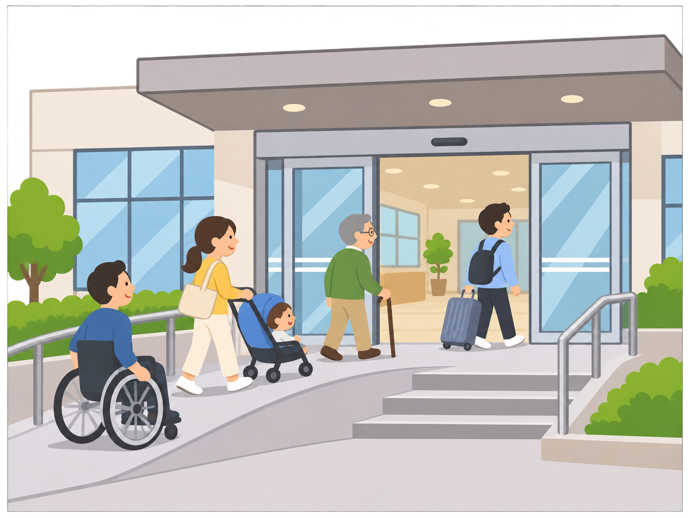
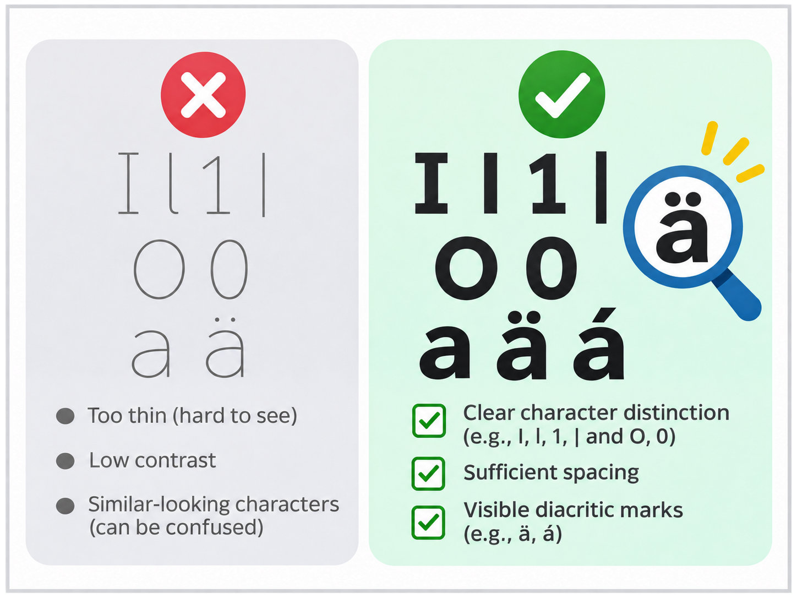
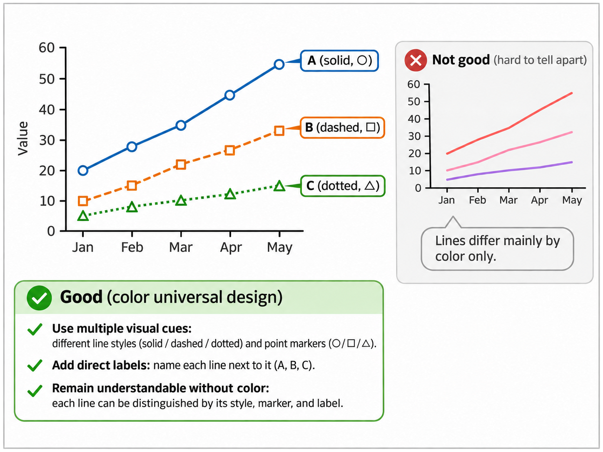

「ユニバーサルデザイン」とは
ユニバーサルデザイン（Universal Design）とは、年齢、性別、国籍、文化、障害の有無、身体能力などの違いにかかわらず、できるだけ多くの人が利用しやすいように、製品や施設、情報などを初めから設計する考え方です。
例えば、建物の入口を設計するとき、階段だけを設けるのではなく、車いすやベビーカーを使う人も通りやすい、段差のない経路を初めから用意することが挙げられます。このような設計は、車いす利用者だけでなく、高齢者や重い荷物を運ぶ人にとっても便利です。
ユニバーサルデザインは、特定の人だけを対象とするのではなく、多様な人が共通して利用できることを目指しています。
ユニバーサルデザインの基本的な考え方
ユニバーサルデザインでは、次の三つの点が特に重要です。
① 多様な利用者を想定する
人によって、身長、視力、聴力、手の動かしやすさ、言語の理解度などは異なります。また、同じ人でも、けがをしているときや、暗い場所にいるときなど、状況によって利用しやすさは変化します。
そのため、平均的な利用者だけを基準にせず、さまざまな人や利用状況を想定します。
② 初めから利用しやすいように設計する
完成後に不便さを解消するのではなく、企画や設計の段階から利用上の障壁が生じにくいようにします。
例えば、駅の券売機を設置する際、車いす利用者にも届きやすい高さや、分かりやすい操作画面を初めから検討することが挙げられます。
③ できるだけ多くの人が共通して利用できるようにする
利用者ごとに専用の設備を設けるのではなく、可能な範囲で同じ設備やサービスを利用できるようにします。
ただし、ユニバーサルデザインは、すべての人が必ず同じ方法で利用しなければならないという意味ではありません。必要に応じて操作方法を選択できるようにすることも重要です。
ユニバーサルデザインの具体例
建物や公共施設
建物や公共施設では、移動のしやすさや設備の操作しやすさを考慮します。

例えば、段差のない入口は、車いす利用者だけでなく、ベビーカーを押す人や足腰の弱い人にとっても利用しやすいです。
また、ドアノブを回す方式ではなく、レバーハンドルを採用すると、握る力の弱い人でも比較的小さな力で開閉できます。
駅の券売機や公共施設の受付端末でも、操作部分の高さや周囲のスペースを工夫することで、子ども、車いす利用者、立って操作する人などが共通して利用しやすくなります。
文字の読みやすさ（UDフォント）
UDフォント（ユニバーサルデザインフォント）は、多様な人にとって文字を読みやすく、読み間違えにくくすることを目指した書体です。
例えば、次のような工夫があります。
- 似た形の文字を区別しやすくする。
- 濁点や半濁点を文字本体と区別しやすくする。
- 文字の線が細すぎたり、小さな表示でつぶれたりしないようにする。
- 文字の形や間隔を調整し、読み間違いを減らす。

一方、文字の線を極端に細くしたり、背景と文字の明るさの差を小さくしたりすると、読み取りにくくなります。
なお、読みやすさはフォントだけで決まるものではありません。文字の大きさ、行間、背景との明度差なども重要です。
色の使い方（カラーユニバーサルデザイン）
カラーユニバーサルデザインとは、色の見え方の違いを考慮し、できるだけ多くの人に情報が正しく伝わるように色や表示方法を工夫する考え方です。
例えば、グラフの複数の系列を色だけで区別すると、色覚特性や表示環境によっては見分けにくい場合があります。

そこで、色の違いに加えて、実線・破線などの線種、丸・三角などの記号、文字によるラベルを組み合わせます。
また、白黒印刷でも情報が失われないよう、明るさの差にも注意します。
大切なのは、単に色の種類を増やすことではなく、色だけに頼らなくても必要な情報を区別できるようにすることです。
ピクトグラムによる案内
ピクトグラムとは、文字の代わりに図や記号を使って情報を伝えるものです。
例えば、トイレ、非常口、エレベーターなどの案内に使われています。
文字が読めない人や、その国の言語に慣れていない人にも意味を伝えやすいという利点があります。
ただし、同じ図でも、文化や経験の違いによって解釈が異なる場合があります。
例えば、避難所を表す図記号が「集合場所」と誤解された場合には、どの部分が誤解を生んだのかを調べ、標準的な記号や補助文字の使用を検討します。そして、さまざまな利用者に再び確認してもらうことが重要です。
Webサイトやアプリ
Webサイトやアプリにも、ユニバーサルデザインの考え方を取り入れることができます。
例えば、文字を拡大できるようにする、画像に代替テキストを付ける、動画に字幕を付ける、キーボードでも操作できるようにする、といった工夫が挙げられます。
また、文字だけ、音声だけ、色だけなど、一つの方法に依存せず、複数の方法で情報を伝えることも大切です。
こうした工夫は、障害のある人だけでなく、騒がしい場所で動画を見る人や、画面が見えにくい環境で操作する人などにも役立ちます。
Webサイトなどで、利用者が情報を取得したり機能を操作したりできることは、特にアクセシビリティという観点から評価されます。
バリアフリー・アクセシビリティとの違い
ユニバーサルデザインと混同しやすい言葉に、バリアフリー、アクセシビリティ、ユーザビリティがあります。
| 用語 | 意味 | 具体例 |
|---|
| ユニバーサルデザイン | 多様な人が利用しやすいように、初めから設計する考え方 | 新しい施設の入口を最初から段差のない設計にする |
|---|
| バリアフリー | 利用を妨げる障壁を取り除く考え方 | 階段しかない既存の入口にスロープを追加する |
|---|
| アクセシビリティ | 情報や機能などを利用できる度合い | 画面読み上げソフトでもWebサイトを利用できる |
|---|
| ユーザビリティ | 利用者にとっての使いやすさ | 券売機で迷わず切符を購入できる |
|---|
特に重要なのは、ユニバーサルデザインとバリアフリーの違いです。
バリアフリーは、段差などの障壁を取り除くことに重点を置きます。一方、ユニバーサルデザインは、多様な人が利用することを前提に、最初から障壁の少ない設計を目指します。
ユニバーサルデザインは完成後も改善する
ユニバーサルデザインでは、初めから多様な利用者を想定することが重要ですが、最初の設計だけですべての問題が解決するとは限りません。
例えば、新しく作った学校のWebサイトが、設計者には使いやすくても、実際には画面読み上げソフトで操作しにくかったり、文字が見えにくかったりすることがあります。
このような問題を発見するためには、異なる年齢や身体能力、利用環境を持つ人に実際に使ってもらい、評価と改善を繰り返すことが大切です。
つまり、初めから配慮することと、完成後も改善することは矛盾しません。多様な利用者の意見を取り入れながら、より利用しやすい設計を目指していくことが重要です。